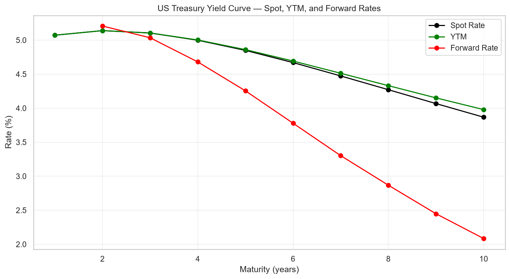
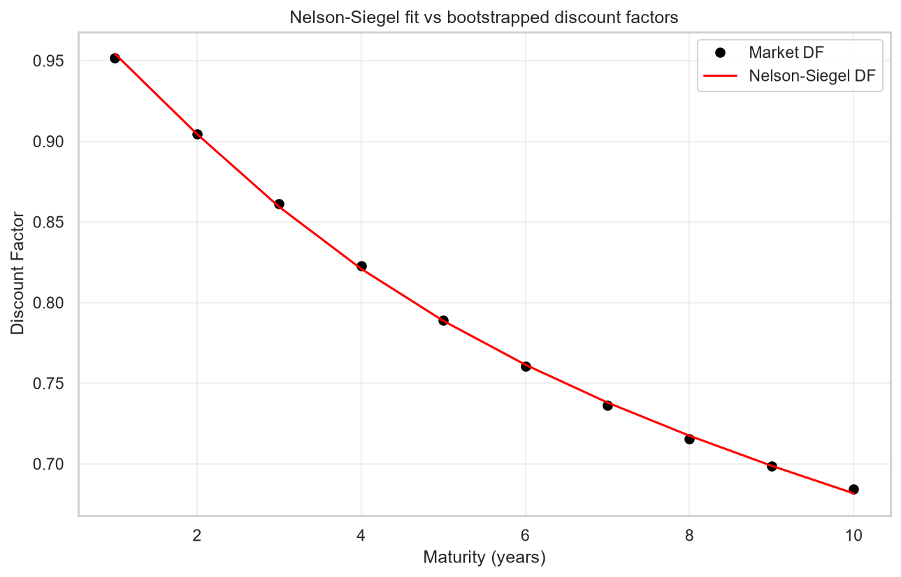
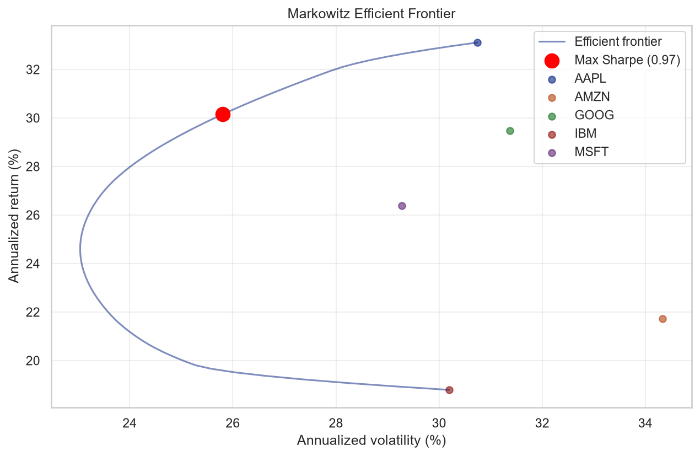
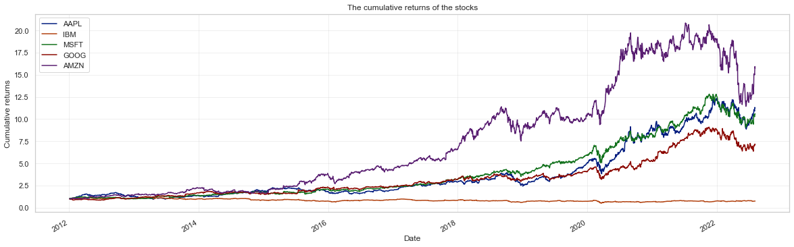

Three methods, one answer
The same discount-factor curve is bootstrapped three independent ways — a direct linear solve, a global least-squares optimum, and hand-rolled forward substitution. They are not expected to agree exactly. They do.
Machine epsilon for a 64-bit float is about 2.2 × 10⁻¹⁶, so the matrix solve and the iterative procedure agree to within one bit of floating-point representation. The global solver, which stops on a numerical tolerance rather than solving exactly, lands 5.8 × 10⁻⁹ away — the expected signature of an optimizer converging rather than a closed form being evaluated.
What's in the package
The bootstrapping logic, the forward-rate derivation and the Nelson-Siegel fit are written out rather than imported from a curve library.
YieldCurve
Builds the cash-flow matrix from (maturity, price, coupon) and bootstraps discount factors three ways. Derives spot rates, yield to maturity per bond, and 1-year forward rates.
NelsonSiegel
The parametric curve central banks and dealers actually use — level, slope, curvature and decay — fitted by least squares to the bootstrapped discount factors to smooth the jagged result.
PortfolioAnalyzer
Returns, volatility and Sharpe from a daily price panel, plus the Markowitz efficient frontier and the maximum-Sharpe tangency portfolio. Risk-free rate can come straight off the bootstrapped curve.
The curve
Bootstrapped from ten Treasury bonds, then smoothed. The curve is humped and inverts after year 2 — the forward curve falls from 5.21% to 2.08%.


| Maturity | 1y | 2y | 3y | 4y | 5y | 6y | 7y | 8y | 9y | 10y |
|---|---|---|---|---|---|---|---|---|---|---|
| Spot | 5.07 | 5.14 | 5.11 | 5.00 | 4.85 | 4.67 | 4.47 | 4.27 | 4.07 | 3.87 |
| YTM | 5.07 | 5.14 | 5.11 | 5.00 | 4.86 | 4.69 | 4.51 | 4.33 | 4.15 | 3.98 |
| 1y forward | 5.21 | 5.04 | 4.68 | 4.26 | 3.78 | 3.30 | 2.87 | 2.45 | 2.08 | — |
Portfolio side
The 1-year spot rate off the curve (5.07%) becomes the risk-free rate for a mean-variance analysis of five large-cap tech names over 1,929 trading days.


| Asset | Weight |
|---|---|
| AAPL | 54.73% |
| GOOG | 28.33% |
| IBM | 10.34% |
| MSFT | 6.60% |
| AMZN | 0.00% |
| Measure | Value |
|---|---|
| Expected return | 30.15% |
| Volatility | 25.81% |
| Sharpe ratio | 0.972 |
| Risk-free rate | 5.07% |
Prices come from yfinance. If that fetch fails, the analysis falls back to a simulated panel — that path uses neutral asset names and marks every chart (synthetic sample data), so simulated output is never presented as market data.
Usage
The package takes an (n, 3) array and hands back rates.
from yield_curve import YieldCurve, NelsonSiegel
# 10 Treasury bonds: (maturity_years, price, coupon_rate)
bonds = np.array([
[1, 96.60, 0.0150],
[2, 93.71, 0.0175],
[3, 91.56, 0.0200],
# ... up to 10-year
], dtype=float)
yc = YieldCurve(bonds)
# Three methods — they all agree
df_matrix = yc.discount_factors('Matrix operations')
df_solver = yc.discount_factors('Global Solver')
df_iter = yc.discount_factors('Iterative Procedure')
# Derived rates
spot = yc.spot_rates() # annual-compounded spot curve
ytm = yc.bonds_ytm() # yield to maturity per bond
fwd = yc.forward_rates() # 1-year forward rates
# Nelson-Siegel smooth fit
ns = NelsonSiegel(bonds[:, 0].astype(float), df_matrix)
ns.fit()
print(f'beta0={ns.params[0]:.4f}, tau={ns.params[3]:.3f}')API reference
Three classes, no framework.
YieldCurve(bonds)
bonds: np.ndarray of shape (n, 3) — maturity in
years, dirty price, coupon rate. Face value 100.
| Method | Returns |
|---|---|
| discount_factors(method) | ndarray (n,) — 'Matrix operations', 'Global Solver' or 'Iterative Procedure' |
| spot_rates() | ndarray (n,) — annual-compounded spot rates |
| bonds_ytm() | ndarray (n,) — yield to maturity per bond |
| forward_rates() | ndarray (n−1,) — 1-year forward rates |
| plot_rates(title, save_path) | plt.Figure — spot, YTM and forward on one chart |
NelsonSiegel(maturities, discount_factors)
Fits f(t) = β₀ + β₁·e−t/τ + β₂·(t/τ)·e−t/τ by least squares.
| Method | Returns |
|---|---|
| fit() | self — solves for β₀, β₁, β₂, τ |
| fitted_discount_factors() | ndarray — model DF over the input maturities |
| plot(market_df, save_path) | plt.Figure — market vs fitted |
PortfolioAnalyzer(prices, risk_free_rate=0.0)
prices: pd.DataFrame — columns are tickers, index is dates.
| Method | Returns |
|---|---|
| efficient_frontier(n_points) | DataFrame — volatility, return, sharpe, weights |
| max_sharpe_portfolio() | dict — weights, volatility, return, sharpe |
| correlation_heatmap(title, save_path) | plt.Figure — correlation of daily returns |
| cumulative_returns_plot(title, save_path) | plt.Figure — cumulative returns per asset |
Run it
The yield curve module needs no network — the bond data ships with it. Only the portfolio module reaches out for prices.
git clone https://github.com/omarja12/Bootstrap-Yield-Curve.git
cd Bootstrap-Yield-Curve
python -m venv .venv
source .venv/bin/activate # Windows: .venv\Scripts\activate
pip install -e ".[dev,yfinance]"
pytest tests/ -v
# the full analysis, headless — writes five plots to docs/images/
python notebooks/run_analysis.py| Path | Contents |
|---|---|
| Bootstrapping_Yield_Curve.ipynb | The original Computational Finance notebook |
| notebooks/Yield_Curve_And_Portfolio_Analysis.ipynb | Walkthrough of the package API |
| notebooks/run_analysis.py | The same analysis, headless |
| src/yield_curve/bootstrap.py | YieldCurve, NelsonSiegel |
| src/yield_curve/portfolio.py | PortfolioAnalyzer and the yfinance helper |
| tests/test_bootstrap.py | Pytest suite — 17 tests |
| docs/images/ | Plots written by run_analysis.py |